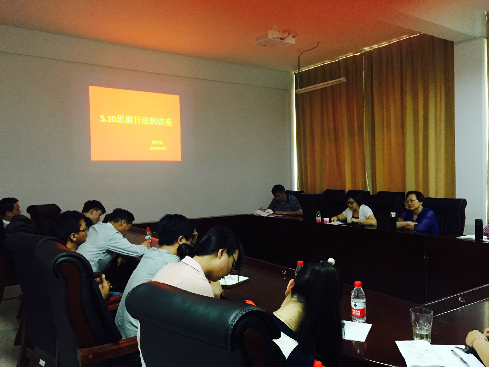
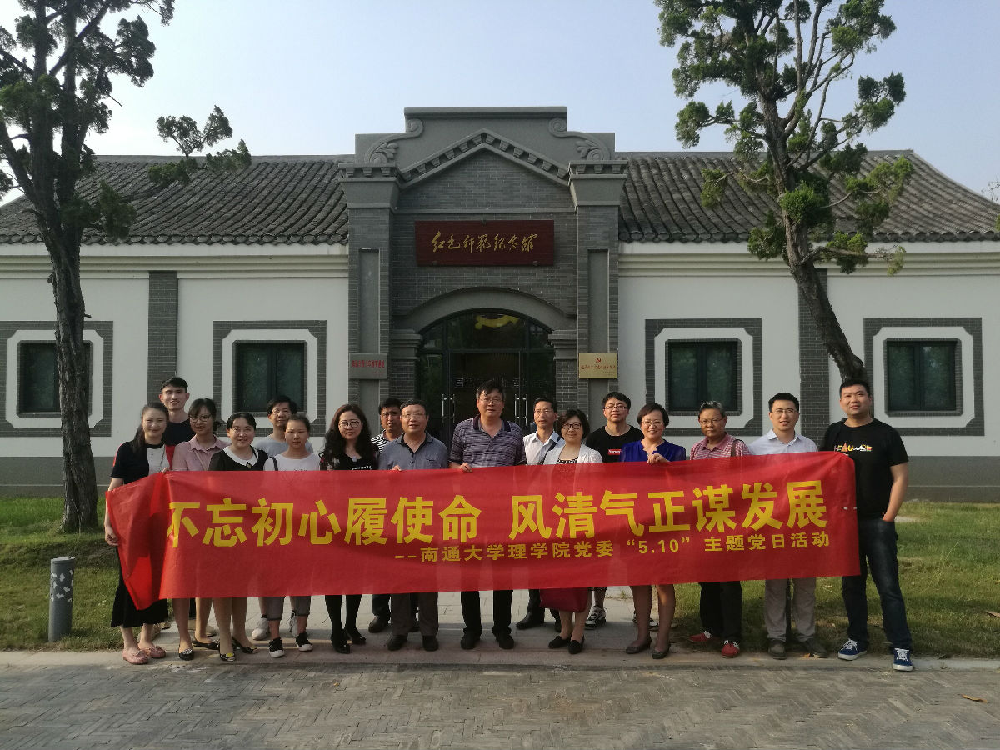

理学院党委开展“不忘初心履使命 风清气正谋发展”主题党日活动
录入员： 理学院 浏览次数： 143 发布日期： 2018-10-17
5月17日下午，理学院党委组织开展“不忘初心履使命风清气正谋发展”主题党日活动，学院班子成员、党委委员、各支部书记、党风监督员及行政支部全体党员参加了活动。
校纪委办公室副主任、学院党风廉政建设联络员朱小娟作5.10思廉日法制讲座报告。朱小娟带领大家认真学习了《中华人民共和国监察法》，并对颁布监察法重要意义、监察委员会的性质与职能、监察法的重要条款进行了解读与宣讲。随后，全体党员赴南通师范高等专科学校参观红色师范纪念馆和刘瑞龙纪念馆。南通高等师范专科学校是一所培养小学、幼教师资为主的全日制普通高等学校，由南通师范、南通女子师范、海门师范、如皋师范等四所南通地方的百年师范在不同的历史时期合并而成，有着“教师摇篮”和“红色师范”的美誉。刘瑞龙是忠诚的共产主义战士、无产阶级革命家，早年曾在通师求学，追求进步，并在通师走上革命道路。在他献身革命、不懈战斗，为实现共产主义伟大理想而奋勇前进的一生中，为党的各项事业倾尽全力，在政治、军事、经济等多方面均有建树。在创建共和国长期的革命斗争中，他九死一生，以智慧和信念，克敌制胜，建立了不朽的功勋；在新中国的建设事业中，他为祖国的农业发展作出了积极的贡献。
院党委书记王明华要求大家，通过主题党日活动自觉学习老一辈无产阶级革命家坚定理想、为党奋斗的崇高品质，把“5.10”思廉日活动与贯彻中央、省市纪委全会精神紧密结合，与“两学一做”学习教育常态化制度化要求紧密结合，与“不忘初心、牢记使命”主题教育紧密结合，凝心聚力，为学校学院事业发展而不懈努力。
在南通高等师范专科学校，朱月萍校长热情接待了理学院一行，并就进一步加强校院合作共赢进行了热烈的研讨。

